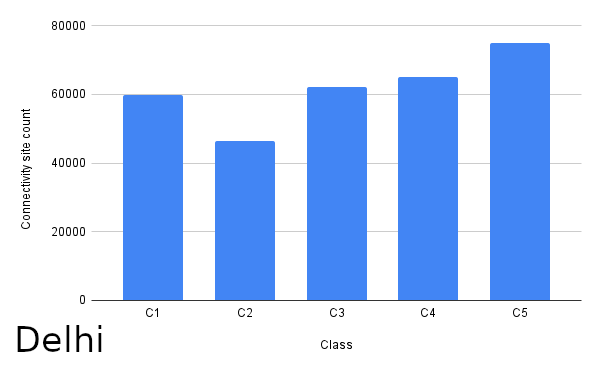

Overall in a city, how much population do the amenities serve?
Method:: For amenities in city obtained population of their
voronoi catchment area, then for amenities in urbanised (urban and
periurban) grids, reported 80 percentile of that distribution
Inferences:
- Cities having less load like Gurgaon imply that these cities have sufficient amenity infrastructure as compared to other cities
- Mumbai has high population load on amenities and it also had high population density in combined grids, this implies that the amenity infrastructure is far behind the demand thus are strained
- Cities like Bangalore which didn’t have that high population density nor that much percentage of population living in combined grids and still having highest load on amenities imply the amenity infrastructure is worse here
- Education and Health were least strained amenities overall which is good since these are basic amenities
- Connectivity is highly constrained which may be due to incomplete data on google places


How much population do the nearest amenities serve in different parts of the cities?
Method:: For each Cz grid obtained population innearest amenity
(within std range) catchment area, reported80 percentile of that
distribution
Inferences:
- All districts except Delhi (least load in C2 grids) have least overall population load in grids C4 (Chennai, Gurgaon, Kolkata, Mumbai) or C5 (Bangalore, Hyderabad). Thus residential grids bear least load in all districts except Delhi
- All districts except Delhi (max load in C5 overall) and Hyderabad (max load in C4 overall), bear max load overall in grids C1 (Gurgaon, Kolkata, Mumbai), C2 (Chennai) or C3 (Bangalore). Thus non residential grids bear maximum load in all districts except Delhi and Hyderabad





Bengaluru
Chennai
Delhi
Gurgaon
Hyderabad
Kolkata
Mumbai

To know more, refer to our research paper here :
Characterizing The Evolution Of Indian Cities Using Satellite Imagery And Open Street Maps
C. Bansal, A. Singla, A. K. Singh, H. O. Ahlawat, M. Jain, P. Singh, P. Kumar, R. Saha, S. Taparia, S. Yadav, A. Seth
ACM COMPASS 2020
Characterizing The Evolution Of Indian Cities Using Satellite Imagery And Open Street Maps
C. Bansal, A. Singla, A. K. Singh, H. O. Ahlawat, M. Jain, P. Singh, P. Kumar, R. Saha, S. Taparia, S. Yadav, A. Seth
ACM COMPASS 2020